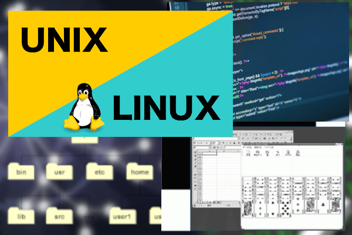
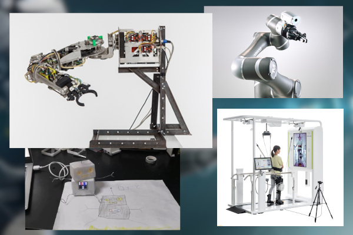

学生生活
目指せる資格
ITパスポート試験、基本情報技術者試験、CGエンジニア検定、画像処理エンジニア検定、マルチメディア検定、CGクリエイター検定、ウェブデザイン技能検定、Microsoft Office Specialist
卒業研修

UNIX
コンピュータを利用するのに必要不可欠なOSの中の一群である「UNIX」系OS。代表的なPC用UNIX系OSのLinuxを主に使い、今後ますます重要となるであろうUNIXサーバの構築・運用、UNIXアプリケーション開発等についての研修を行います。

ユーザ・インタフェース
人間とコンピュータが色々な形で情報をやりとりすることで、人にやさしいシステムを開発する研修を行っています。たとえば、手の動きだけで直感的にロボットを制御するシステムや、音声認識、音声合成、人工知能を搭載した対話型ロボットなどを開発しています。
| １限目 | ２限目 | ３限目 | ４限目 | ５限目 | |
|---|---|---|---|---|---|
| 月 | プログラミング演習Ⅰ | プログラミング演習Ⅰ | 線形代数学A | × | × |
| 火 | × | 微分積分学 | 日本語表現法基礎演習 | オペレーティングシステム | × |
| 水 | マルチメディア | 工学基礎演習Ⅱ | キャリアデザインⅡ | 国語基礎Ⅱ | × | 木 | データベース演習 | 英語表現法基礎演習 | 保健体育Ⅱ | × | × |
| 金 | × | × | 情報処理基礎実験 | 情報処理基礎実験 | 応用数学 |